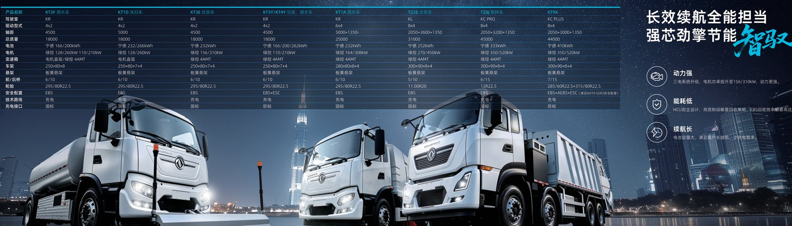

Desert fleets face a slower killer than heat: fine dust that works into every seal and cools nothing. An electric truck built for sandstorm duty needs sealed cooling loops and rated ingress protection, and this spec guide explains what the Dongfeng range carries for GCC and African operators.
Ingress protection codes describe what a component resists. IP54 means limited dust entry that must not interfere with operation, plus protection from water spray. IP67 means dust-tight and immersion to 1 m for 30 minutes. For a desert EV truck the distinction matters most at the battery pack, where the Dongfeng units are IP67, and at the cabin and electronics, where IP54 to IP67 grades apply depending on the sub-assembly. Never assume a whole truck is IP67; read the rating per component.
The practical reading for a sandstorm buyer is simple. The pack, the most expensive and failure-critical part, is the most sealed. The cabin and charger cabinet, which see filtered air, are rated a step lower because some dust entry is acceptable as long as it does not stop operation. Knowing which grade applies where lets you plan maintenance instead of guessing why a part failed.
The CATL LFP pack in every Dongfeng EV truck is liquid cooled and held at 25 to 35 deg C. In a sandstorm the loop is a closed circuit, so outside air never touches the cells; only the coolant radiator sees the dusty air, and that radiator sits behind a washable filter. The 210 to 600 kWh packs therefore keep their thermal window even when the ambient hits 50 deg C, because the sealed loop is isolated from the grit outside.
This is a structural advantage over a diesel in the desert. A diesel draws unfiltered, hot ambient air straight into the engine, and a clogged intake strangles power exactly when the driver needs it most. The EV pack drinks only coolant, and the only airflow it relies on is the filtered radiator stream, which a daily rinse keeps clear. Less dust in the cooling path means steadier cell temperatures and a longer pack life.
Protect the cab and electronics with these measures:
The table maps component ratings across the desert-duty range so you can plan the service interval that matches each grade.
| Component | Rating | Dust defence | Service note |
|---|---|---|---|
| Battery pack | IP67 | Dust-tight enclosure | Inspect seal every 6 months |
| Motor | IP67 | Sealed housing | Clean exterior after storms |
| Cabin HVAC | IP54 | Two-stage filter | Replace filter monthly |
| Charger cabinet | IP54 | Filtered intake | Blow out monthly |
The KT7A electric washing truck is part of the municipal series with a 282 kWh pack and is well suited to airport and site dust control, where it can wash its own intake path as it works. Its sealed drivetrain means no air filter clogging the engine, a failure mode that idles diesel washers in long dust seasons. The Iraq electric truck market and wider GCC have shown strong interest in exactly this sealed, low-maintenance profile for harsh sites.
The KT7A also illustrates the maintenance dividend of going electric in dust. A diesel washer needs daily air-filter blows and frequent element changes through a sandstorm season; the KT7A needs the same radiator rinse but no engine air path to manage. Over a long Iraqi summer that difference is measured in hours of avoided roadside downtime and in a cab that stays cooler because the HVAC filter is doing less fighting the grit.
Keep the fleet alive through dust with these field rules:
Diesel trucks in the desert rely on forced air cooling through big filters that clog and rob power; an EV truck shifts that burden to a sealed liquid loop and a small filtered radiator. The result is steadier motor output from the 282 to 510 kW LvKong unit and far fewer filter-related breakdowns across a long Iraqi or Sahelian summer. Shaanxi Fenghan Trading Co., Ltd can add a desert-duty kit, extra seals and filters, to any Dongfeng EV truck order.
The desert kit is cheap insurance. A few extra gaskets, a box of radiator pre-filters and a documented rinse schedule cost a fraction of one stranded-truck recovery, and they let the fleet keep its 25 to 35 deg C pack window even on the worst days. For operators in the GCC and across North Africa, that reliability, not the headline range, is what makes an electric truck worth the switch.
The desert kit is small, cheap and high leverage. Stock a box of radiator pre-filters, a set of cabin HVAC elements, spare door and hatch seals, and a couple of charge-port gaskets, and you have covered the parts that dust actually attacks. None of these are expensive, but every one of them will strand a truck if it fails in the field and is not on the shelf. The pack and motor are IP67 and rarely the problem; the filters and seals are the consumables that keep them that way, so treat them as planned consumption, not as spares of last resort.
Order the kit with the truck so it arrives together and the depot starts protected from day one. A fleet that waits until the first sandstorm to source filters will lose days to shipping, while a fleet that staged the kit simply rinses the mesh at end of shift and keeps running. For the Iraq market in particular, where dust storms can run for days, having two sets of filters per truck means one is always clean and ready while the other dries after a rinse, and that continuity is what separates an EV that works from one that sits.
Drivers make or break the sealing strategy. Teach every operator the five-minute routines that protect the truck: rinse the radiator mesh daily in active storms, park on recirculation, report any unexplained cooling-loop temperature rise, and never power-wash the charge port or the motor housing directly. A driver who understands why the sealed loop matters will protect it without supervision, and that behavioural layer is worth as much as the IP rating itself.
The desert EV is not a different truck, it is the same Dongfeng platform with the sealing and filtration discipline that harsh sites demand. Done right, the result outlasts a diesel in the same storm because there is no air path to clog and no engine to suffocate under a veil of fine grit. Specify the kit, train the drivers, and the sandstorm becomes just another shift instead of a fleet-ending event that leaves a row of dead diesels behind it.
Spec a sandstorm-ready electric truck on WhatsApp +86 153 1943 1311 or sales@fenghan-trade.com, and the export desk will configure a KT7A or sibling model for desert ingress protection.
Ready to electrify your fleet? Contact Shaanxi Fenghan Trading — authorized Dongfeng EV truck exporter. WhatsApp: +86 153 1943 1311 | Email: sales@fenghan-trade.com | dongfengevtrucks.com
🌐 Our Network: Fenghan Trade (SAGMOTO/SHACMAN Truck Export) · SAGMOTO heavy duty diesel trucks